Installing AsteriskNOW Official Distro
The simplest way to install AsteriskNOW is to follow these instructions:
1. Download the ISO file from http://asterisk.org/downloads/asterisknow .
2. Burn the ISO file to a DVD or CD. If you need help doing this, simply Google "burn ISO to DVD" and you'll find plenty of instructions OR click this link so I can Google it for you: "Google burn ISO to DVD" .
3. Select a computer to install AsteriskNOW . EVERYTHING ON THIS COMPUTER WILL BE DELETED AND REPLACED WITH THE AsteriskNOW DISTRO. Configure the computer to boot from a DVD or CD. Insert the DVD or CD into the computer and turn it on. NOTE: You must be connected to the internet to run the installer . If you're installing using a USB drive, you may encounter a "kickstart" error while installing. If you do, don't fret! Just keep hitting enter when the prompts appear and everything will probably work just fine.
4. The installer will begin with a prompt to select the Asterisk Version you wish to install.
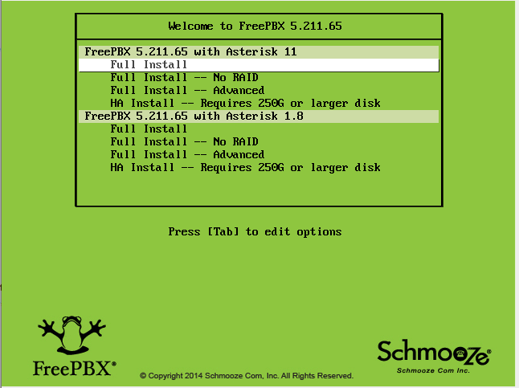
5. The system will present you with a window showing that it is retrieving images while it downloads the install package from the internet. This should take 3-5 minutes.
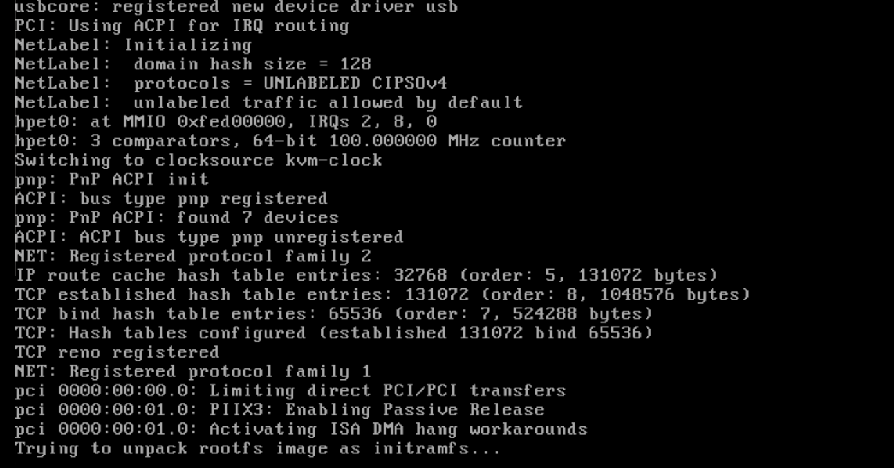
6. After the system boots you will see options to configure your network. The default selections are fine in most cases, so just press TAB until the red "OK" box is highlighted in white and then press ENTER. You can also choose the option to manually configure your network connections, if desired.
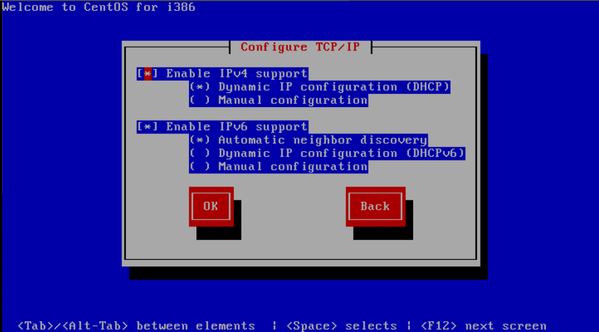
Once you hit “OK” the system will configure your Network Connections.
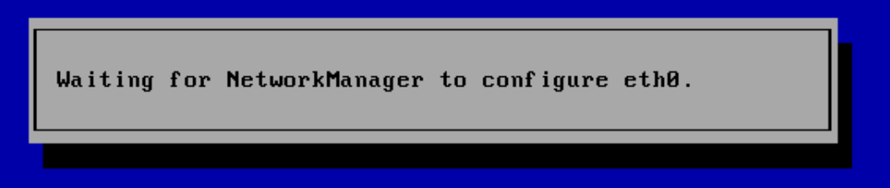
7. Eventually, you will reach the "Time Zone Selection" screen. If your system clock uses GMT (most do not), hit space. Then, hit TAB to move to the time zone selection area. Use the up and down arrows to select the time zone where you will use the system, and then hit TAB until the red "OK" button is highlighted in white. Then, hit ENTER.
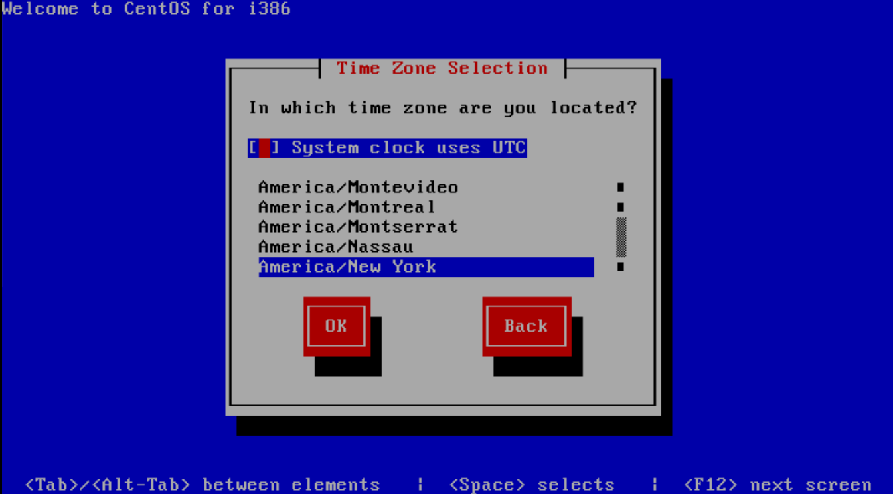
8. The installer will ask you to to select your root password. The root password is the password you'll use to login to the Linux command prompt later. Selecting a secure password is very important. Type the password, hit TAB, type it again, hit TAB, and then hit ENTER.
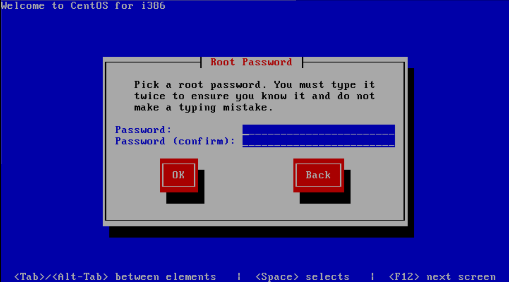
9. The installer will do a dependency check, format your hard drive, and then start the package installation process. There may be a significant delay before the installation actually starts, so be patient. Eventually, the installation will show you a progress bar indicating the percentage completed and the time elapsed/remaining. That process should take between 20 and 30 minutes, it will then reboot.
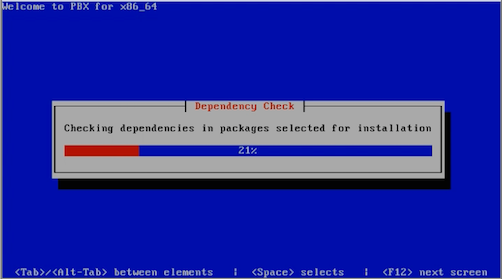
10. A few additional packages will be installed and updated after the reboot from the install. This can take 10-15 minutes.
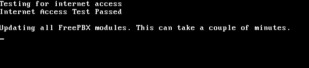
11. Once completed you'll reach the Linux console/command prompt login. You can login here using the username "root" without quotes, and the root password you selected earlier.
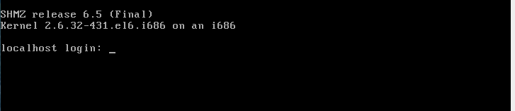
12. After you login, you should see the IP address of your PBX as defined below.
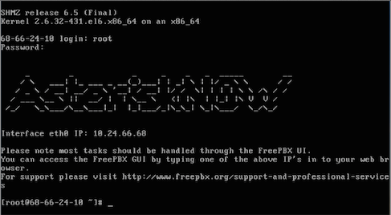
13. Go to another computer on the same network and enter that IP address into your web browser. The first time you do so you'll be asked to create the admin username and the admin password. This username and password will be used in the future to access the FreePBX configuration screen. Note: These passwords do not change the root password! They are only used for access to the web GUI interface.
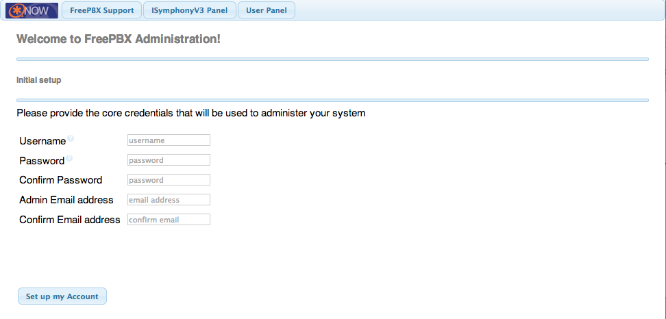
14. The main FreePBX screen will offer you four options:
- PBX Administrator - allows you to configure your PBX. Use the admin username and admin password you configured in the step above to login. This section is what most people refer to as "FreePBX."
- User Control Panel
- Operator Panel - screen that allows an operator to control calls
- Official FreePBX Support:
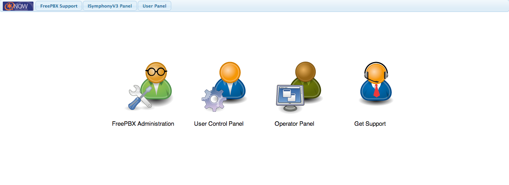
15. You have now successfully installed AsteriskNOW with FreePBX GUI.
Need additional assistance?
There is an active community of AsteriskNOW users, integrators, and developers, who provide community support on the AsteriskNOW forums.
GUI support is provided by FreePBX. Please visit the FreePBX wiki for additional help by clicking here.
Digium also offers a complete line of cloud and hardware products to complete your AsteriskNOW solution. These products give you a way to connect to the PSTN so you can start using AsteriskNOW. These include:
- SIP Trunking
- Telephony Cards for analog, digital, and BRI PSTN connectivity
- Asterisk IP Phones
- VoIP Gateways
- Asterisk Training
Digium is the Gold Standard in Asterisk Hardware
Digium is the leading manufacturer of analog and digital interface cards, voice compression modules, redundancy solutions, and IP media gateways for use with the Asterisk open source communications engine. Digium is also the developer and maintainer of Asterisk. Asterisk is the free and open source communications engine that AsteriskNOW is built on.
When you purchase Digium products, not only are you getting the best products in the industry, you are also contributing and supporting the free Asterisk open source project! Thanks for your support!
{kind=link}
{kind=link}
{kind=link}
{kind=link}
{kind=link}
{kind=link}
{kind=link}
{kind=link}
{kind=link}
{kind=link}
{kind=link}
{kind=link}
{kind=link}
{kind=link}
{kind=link}
{kind=link}
{kind=link}
{kind=link}